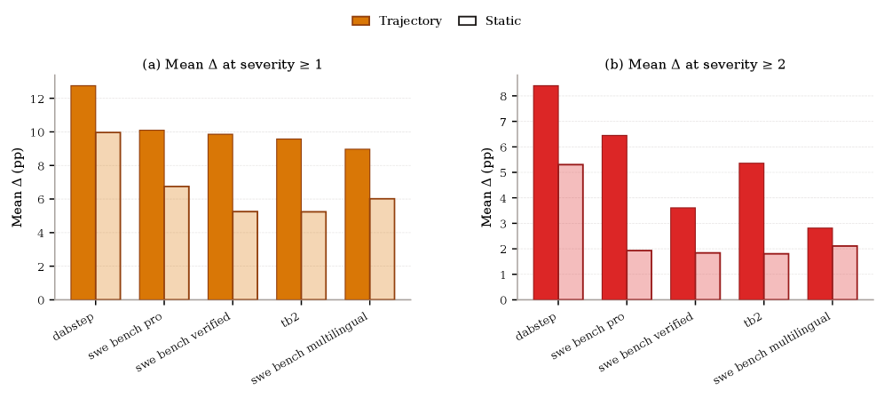
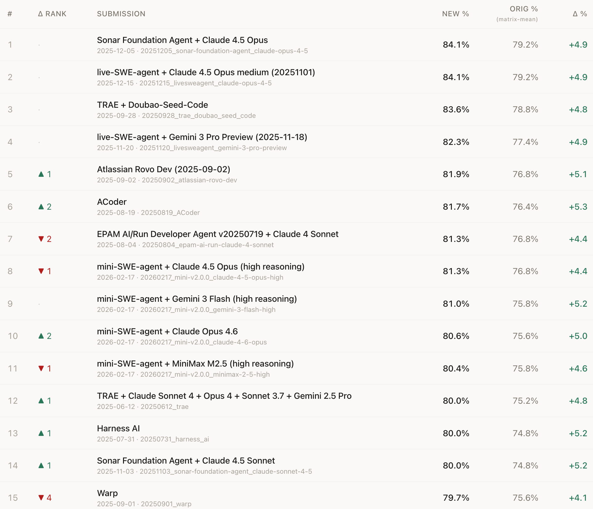

This paper introduces Auto Benchmark Audit (ABA), an agentic framework that systematically uncovers hidden environment dependencies, specification gaps, and grading logic flaws in AI benchmarks, showing that over 25.7% of tasks have critical issues that distort model rankings.
本文提出自动基准审计（ABA）框架，系统性地检测AI基准测试中的隐藏环境依赖、规范缺失和评分逻辑缺陷。在168个基准测试中，超过25.7%的任务存在关键问题，过滤这些问题后，SWE-bench Verified和Terminal-Bench 2的平均性能分别提升9.9%和9.6%。
Deep Note — auto-benchmark-audit
Key Takeaways - ABA is an agentic framework that systematically audits AI benchmarks for hidden environment dependencies, specification gaps, and brittle grading logic. - Applied to 168 benchmarks across nine domains, ABA identifies critical issues in over 25.7% of tasks. - Filtering out problematic tasks shifts model rankings and increases average performance on SWE-bench Verified and Terminal-Bench 2 by 9.9% and 9.6% respectively. - ABA operates in static and trajectory modes, with trajectory mode finding more issues by leveraging runtime behavior. - Findings are validated by expert review and upstream pull requests, demonstrating high precision.
0) Metadata
- Title: Automated Benchmark Auditing for AI Agents and Large Language Models
- Alias: auto-benchmark-audit
- Authors: Junlin Wang, Federico Bianchi, Shang Zhu, Fan Nie, Yongchan Kwon, Bhuwan Dhingra, James Zou
- arXiv ID: 2605.26079
- Published:
- Links:
- Abs: https://arxiv.org/abs/2605.26079
- HTML: https://arxiv.org/html/2605.26079v1
- PDF: https://arxiv.org/pdf/2605.26079
- Tags: benchmark-auditing, agentic-framework, llm-evaluation, reproducibility, safety-evaluation
- Domains: ai_safety, system_safety
- Rating: 5/5 (base 1 + quality 2 + observation 2)
1) Why-read
This paper introduces Auto Benchmark Audit (ABA), an agentic framework that systematically uncovers hidden environment dependencies, specification gaps, and grading logic flaws in AI benchmarks, showing that over 25.7% of tasks have critical issues that distort model rankings.
2) CRGP
C — Context
Modern AI benchmarks have grown too complex for traditional manual verification, with tasks involving containerized environments, multi-stage evaluation harnesses, and runtime-dependent grading logic. Prior work like Gururangan et al. (2018) exposed annotation artifacts in NLI benchmarks through sustained manual effort, but such approaches cannot scale to the complexity of current benchmarks like SWE-bench and Terminal-Bench.
R — Related work
- Gururangan et al. (2018) exposed annotation artifacts in SNLI and MNLI through manual inspection.
- Akrami et al. (2020) showed data redundancy and test leakage in knowledge graph completion benchmarks.
- Jimenez et al. (2024) introduced SWE-bench, a complex agentic benchmark with containerized environments.
- Merrill et al. (2026) introduced Terminal-Bench, a benchmark requiring runtime state evaluation.
- Phan et al. (2025) and Rein et al. (2024) introduced static QA datasets HLE and GPQA respectively.
G — Gap
Existing benchmark verification relies on manual effort that cannot scale to modern complex benchmarks with containerized environments, multi-stage evaluation harnesses, and runtime-dependent grading logic. Domain experts often leave implicit assumptions and environment specifications incomplete, and generalist annotation cannot fill this expertise gap.
P — Proposal
ABA is an agentic framework that uses an evidence collector agent to resolve heterogeneous benchmark artifacts into a uniform manifest, then an auditor agent inspects tasks using shell tools guided by a standardized rubric. It operates in static mode (analyzing task definitions) and trajectory mode (analyzing recorded agent traces), identifying issues in instruction clarity, environment compatibility, and evaluation correctness.
---
4) Experiments
Main results
ABA was applied to 168 benchmarks across nine domains, covering over 30,000 tasks. It identified critical issues in over 25.7% of evaluated tasks. Filtering out problematic tasks increased average performance on SWE-bench Verified by 9.9% and on Terminal-Bench 2 by 9.6%, shifting model rankings. Findings were validated by expert review and upstream pull requests.
Ablation
Trajectory mode finds more issues than static mode by leveraging intermediate execution traces and runtime behavior, as shown in Section 5 of the paper.
Limitations
["ABA's effectiveness depends on the quality and completeness of the evidence collector's manifest; benchmarks with highly non-standard structures may require manual configuration.", 'The framework may miss issues that require domain-specific knowledge not captured in the rubric or shell tools.', 'Validation relies on expert review and upstream PRs, which may not cover all identified issues uniformly.']
5) Why it matters
- For researchers building or using AI benchmarks, ABA provides a systematic way to detect hidden flaws that distort capability assessments, directly impacting the reliability of model comparisons.
- The finding that over 25.7% of tasks have critical issues highlights the fragility of current evaluation practices and the need for automated auditing tools.
- The 9.9% and 9.6% performance shifts on SWE-bench and Terminal-Bench demonstrate that benchmark issues can significantly alter perceived model capabilities, which is crucial for safety-critical applications.
6) Next steps
- [ ] Apply ABA to your own benchmark suite to identify and fix hidden environment dependencies, specification gaps, and grading logic issues.
- [ ] Integrate ABA into the benchmark development pipeline as a continuous integration step to catch issues before public release.
- [ ] Extend ABA's rubric to cover additional issue categories such as data leakage or temporal dependency in dynamic benchmarks.
- [ ] Explore using ABA's trajectory mode to audit agent behavior beyond benchmark tasks, e.g., in real-world deployment scenarios.
7) Scoring
5/5 = base 1 + quality 2 + observation 2
Deep Note — 自动基准审计
主要结论 - ABA是一个智能体框架，能够系统审计AI基准测试中的隐藏环境依赖、规范缺失和脆弱的评分逻辑。 - 应用于9个领域的168个基准测试，ABA识别出超过25.7%的任务存在关键问题。 - 过滤问题任务后，SWE-bench Verified和Terminal-Bench 2的平均性能分别提升9.9%和9.6%，模型排名发生变化。 - ABA支持静态模式和轨迹模式，轨迹模式通过利用运行时行为发现更多问题。 - 发现结果经过专家评审和上游pull request验证，具有高精度。
1) 阅读理由
本文提出自动基准审计（ABA）框架，系统性地发现AI基准测试中隐藏的环境依赖、规范缺失和评分逻辑缺陷，并证明超过25.7%的任务存在关键问题，从而扭曲模型排名。
2) CRGP（背景 / 相关工作 / 差距 / 方案）
现代AI基准测试因涉及容器化环境、多阶段评估框架和运行时依赖的评分逻辑，已过于复杂而无法依赖传统人工验证。先前工作如Gururangan等人（2018）通过持续人工努力暴露了NLI基准中的标注伪影，但此类方法无法扩展到当前SWE-bench和Terminal-Bench等复杂基准。ABA是一个智能体框架，使用证据收集智能体将异构基准工件解析为统一清单，然后审计智能体使用标准化评分标准通过shell工具检查任务。它支持静态模式（分析任务定义）和轨迹模式（分析记录的智能体轨迹），识别指令清晰度、环境兼容性和评估正确性方面的问题。
3) 实验
ABA应用于9个领域的168个基准测试，覆盖超过30,000个任务，识别出超过25.7%的评估任务存在关键问题。过滤问题任务后，SWE-bench Verified的平均性能提升9.9%，Terminal-Bench 2的平均性能提升9.6%，模型排名发生变化。发现结果经过专家评审和上游pull request验证。
消融实验
轨迹模式通过利用中间执行轨迹和运行时行为，比静态模式发现更多问题，如论文第5节所示。
局限性
['ABA的有效性取决于证据收集智能体清单的质量和完整性；具有高度非标准结构的基准测试可能需要手动配置。', '该框架可能遗漏需要评分标准或shell工具未捕获的领域特定知识的问题。', '验证依赖于专家评审和上游PR，可能无法均匀覆盖所有识别的问题。']
4) 重要性
- 对于构建或使用AI基准测试的研究人员，ABA提供了一种系统方法检测隐藏缺陷，这些缺陷会扭曲能力评估，直接影响模型比较的可靠性。
- 超过25.7%的任务存在关键问题这一发现，凸显了当前评估实践的脆弱性以及自动化审计工具的必要性。
- SWE-bench和Terminal-Bench上9.9%和9.6%的性能变化表明，基准问题会显著改变感知的模型能力，这对安全关键应用至关重要。
5) 下一步
- [ ] 将ABA应用于自己的基准测试套件，识别并修复隐藏的环境依赖、规范缺失和评分逻辑问题。
- [ ] 将ABA集成到基准开发流程中，作为持续集成步骤，在公开发布前捕获问题。
- [ ] 扩展ABA的评分标准以涵盖更多问题类别，如数据泄露或动态基准中的时间依赖。
- [ ] 探索使用ABA的轨迹模式审计基准任务之外的智能体行为，例如在真实世界部署场景中。

![Figure 9: Top-15 of swe_bench_verified after removing all
Major and Minor trajectory-flagged tasks. orig % is the
public matrix-mean score; new % is recomputed on the
audited task set; Δ \Delta % and Δ \Delta Rank report the change
relative to the public ordering. Even with the broader exclusion
rule the top three slots are stable, but several middle-of-pack
systems swing by up to eight places (e.g. Sonar Foundation Agent
+ Claude 4.5 Sonnet rises eight, EPAM AI/Run Developer Agent
drops eight), with the largest score lifts exceeding +13 points.](figures/1294/fig_007.png)
